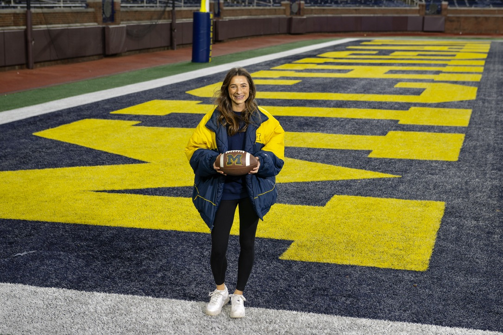
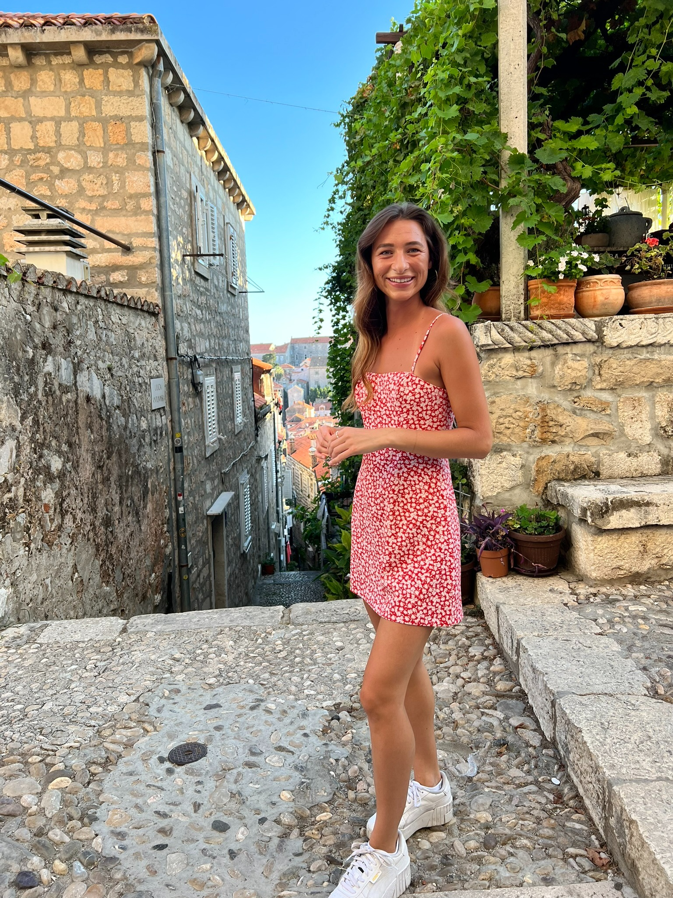

Driven by curiosity.
Motivated by progress.
My journey from live music to education and UX is rooted in understanding people and creating meaningful experiences. I’m currently pursuing a Master of Science in Information at the University of Michigan, building hands-on experience in UX research and product design.
Explore my workProjects(06)
Different paths.
One purpose.
I've always been drawn to creating meaningful experiences. My journey from live music to education and now UX has been shaped by curiosity about people and a desire to make the things we use more intuitive.
As an educator, I saw firsthand how confusing technology could interrupt learning. UX gave me a way to investigate those barriers and think more intentionally about improving them.
The journey that
brought me here.
Music industry management
I studied business at Ferris State University and earned a bachelor's degree in Music Industry Management. Experiential learning and the behind-the-scenes work of live events taught me how meaningful experiences are created.
Education & teaching
Mentoring led me to a master's degree in Education at the University of Michigan. Teaching elementary students strengthened my understanding of different learners and showed me how digital tools can either support or obstruct learning.
Discovering UX
Helping colleagues navigate frustrating interfaces sparked my interest in UX. Studying UX research and design gave me methods for turning observed usability problems into actionable recommendations.
Where I am today
While working full-time in the University of Michigan Athletic Department, I support student-athletes and continue learning how accessible, intuitive systems shape people's experiences. I'm also pursuing a Master of Science in Information and gaining hands-on UX research, problem-solving, and product design experience.

What I bring to design
Experiences across music, education, and UX inform the way I listen, collaborate, and solve problems.
Projects include academic research and product concepts; recommendations are not presented as implemented outcomes.
